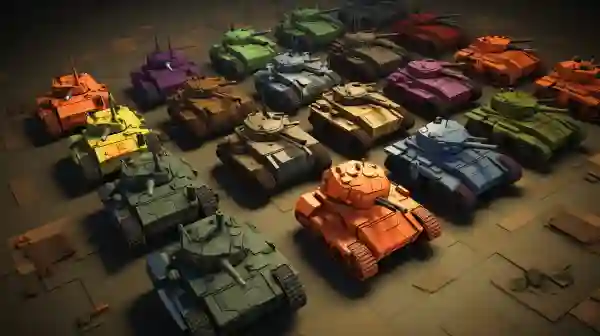
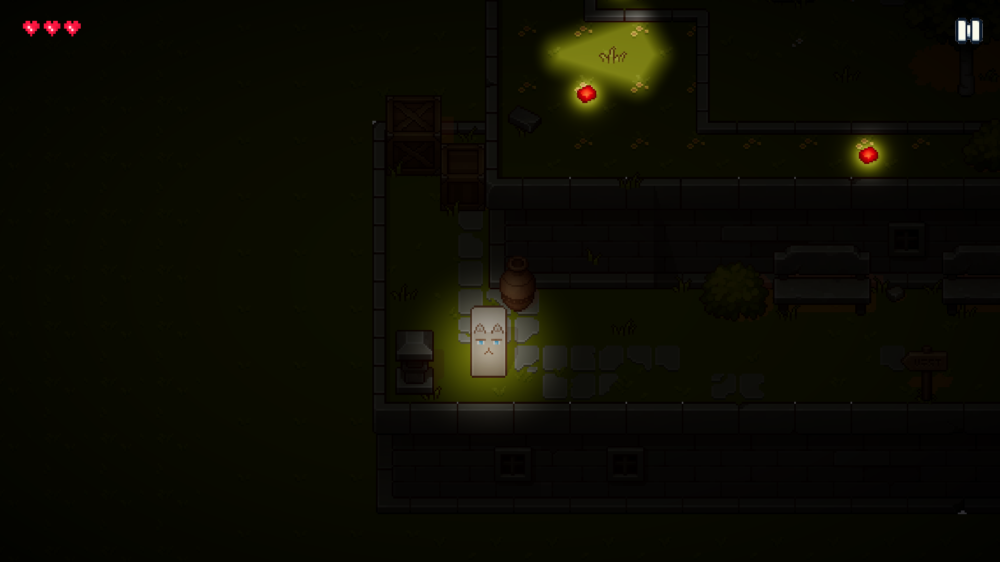
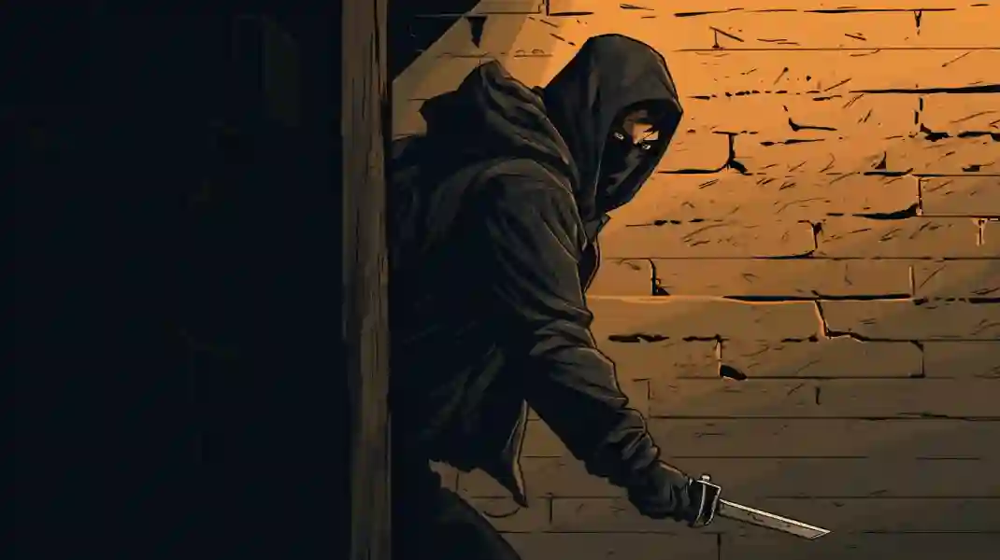

▶ Watch gameplay ↗UNITY · C# · MVC
Battle Tank
Two-player tank battles with a Model–View–Controller architecture.
UNITY GAMEPLAY PROGRAMMER
I’m Akash Kapoor. I build gameplay in Unity with C#, bringing together responsive mechanics, clear architecture, and a player-first mindset.
TORONTO, CANADA / UNITY · C# · C++

01 / SELECTED WORK
A closer look at the games I build
and the systems behind them.

▶ Watch gameplay ↗UNITY · C# · MVC
Two-player tank battles with a Model–View–Controller architecture.

▶ Play project ↗UNITY · C# · ENEMY AI
Enemy behavior that transitions between patrol, chase, and attack.
02 / UNDER THE HOOD
Technical notes from existing projects.
Source code linked for a deeper look.
BATTLE TANK / ARCHITECTURE
A two-player tank game implemented using MVC, keeping the project organized around distinct responsibilities.
Implementation: The original portfolio identifies Model–View–Controller as the pattern used for Battle Tank.
Design rationale: MVC provides a way to separate game data, input and logic, and presentation. The diagram illustrates the pattern, rather than a verified dependency map of this codebase.
Evidence: Explore the playable build and repository. No performance improvement is claimed here.
STATE PATTERN / ENEMY AI
Enemies change behavior through patrol, chase, and attack states as the gameplay situation changes.
Implementation: The original State Pattern project describes dynamic enemy transitions between patrol, chase, and attack.
Design rationale: Explicit states make behavior easier to reason about. The sequence above summarizes the behavior; it does not assert exact transition conditions.
Next documentation step: Add annotated transition code and a reproducible playtest before publishing a full case study.
03 / PROFESSIONAL EXPERIENCE
Professional Unity development
across mobile and virtual reality.
AppMechanics
Worked on mobile games and a multiplayer VR office experience using Unity.
04 / ABOUT ME
I enjoy the space where technical problem-solving becomes something you can play.
My work spans Unity gameplay, mobile and VR experiences, and C++ projects with SFML. I’m interested in responsive mechanics, useful design patterns, and making complex systems easier to understand.
BUILD WITHUnity · C# · C++ · SFML
THINK INGameplay · Game physics · Data structures
WORK WITHGit · Photon · MVC · State machines
05 / LEARNING ROADMAP
My first focus is the 3D Character Controller Study, with learning planned to begin on November 5, 2026. The GameDev.tv bundle has not been purchased yet. No playable build or completed features are available; the remaining studies have not started.
The existing portfolio collection, including learning projects and pattern exercises.
A classic arcade-style shooter game where players battle waves of enemies. Implemented with the MVC design pattern and optimized for smooth gameplay.
Inspired by the classic game, players aim to shoot targets as they appear on the screen. Features increasingly challenging waves and scoring mechanics.
A Unity-based Snake game with both single-player and multiplayer modes, featuring power-ups, dynamic scoring, and screen wrapping for an engaging, competitive experience.
A 2D stealth survival game where players navigate dark environments, avoiding light sources to remain hidden and survive each level.
Array Jumper is a game where the player navigates blocks using 1-D arrays, aiming to reach the last block while avoiding obstacles.
Minesweeper is a classic puzzle game where players uncover tiles to avoid hidden mines. The goal is to clear the board without detonating any mines.
A modern twist on the classic Snake game. Navigate through walls, eat to grow, and avoid colliding with yourself. Implemented using Linked Lists for dynamic gameplay.
Interactive projects using C++ and SFML to demonstrate Linear and Binary Search with dynamic visualizations.
A sorting algorithm visualizer that allows users to visualize the sorting process of different algorithms like Bubble Sort, Selection Sort, Insertion Sort, Merge Sort, Quick Sort, and Heap Sort.
Angry Monkeys is a top-down shooter game where monkeys have to pop balloons before they reach the end point. I implemented the Service Locator pattern to manage game state and events.
Battle Tank is a 3D tank battle game where two players can battle each other using tanks. I implemented the game using the MVC (Model-View-Controller) pattern.
A horror game where players navigate through a haunted house to complete tasks. I implemented the Observer pattern to manage game state and events effectively.
A space shooter game where players must destroy enemy spaceships. I implemented the Object Pooling pattern to efficiently manage enemy spaceship instances.
A turn-based strategy game where players command units to attack enemy forces. I implemented the Command pattern to manage game state and unit actions effectively.
A game demonstrating the State pattern through complex enemy AI behavior. Enemies dynamically change their behavior based on different states like patrol, chase, and attack.
LET’S CONNECT
Let’s talk about gameplay programming, Unity development,
or the next interactive experience.